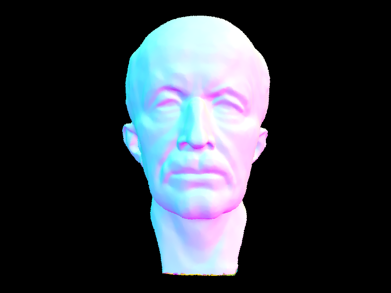
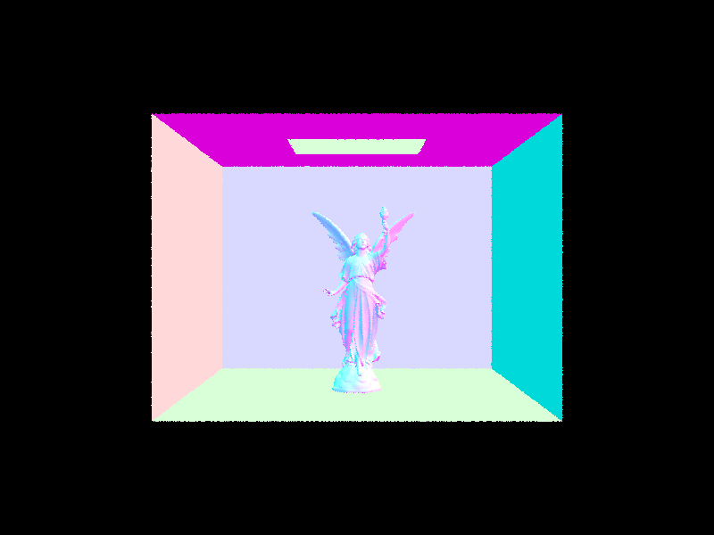
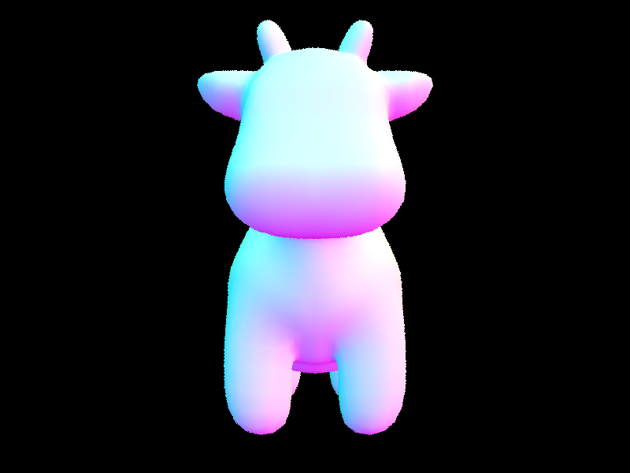
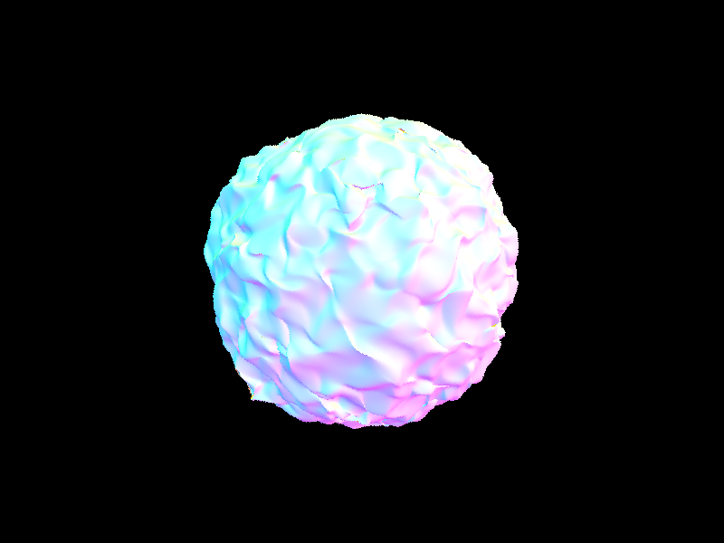
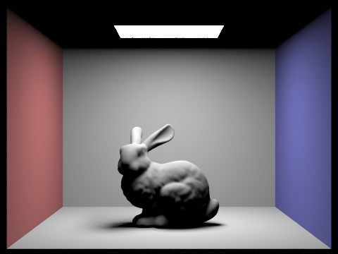
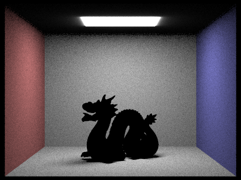
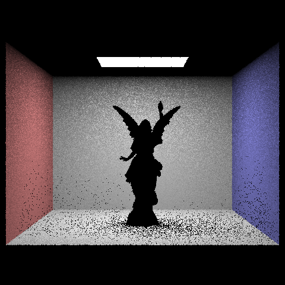
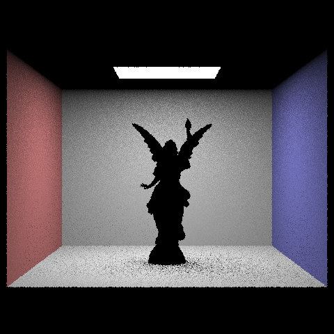
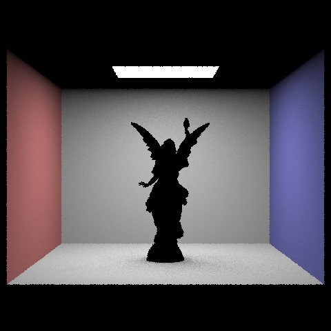

If you are well-versed in web development, feel free to ditch this template and make a better looking page.
Here are a few problems students have encountered in the past. Test your website on the instructional machines early!
- Your main report page should be called index.html.
- Be sure to include and turn in all of the other files (such as images) that are linked in your report!
- Use only relative paths to files, such as
"./images/image.jpg"
Do NOT use absolute paths, such as"/Users/student/Desktop/image.jpg"
- Pay close attention to your filename extensions. Remember that on UNIX systems (such as the instructional machines), capitalization matters.
.png != .jpeg != .jpg != .JPG
- Be sure to adjust the permissions on your files so that they are world readable. For more information on this please see this tutorial: http://www.grymoire.com/Unix/Permissions.html
- And again, test your website on the instructional machines early!
Here is an example of how to include a simple formula:
a^2 + b^2 = c^2
or, alternatively, you can include an SVG image of a LaTex formula.
Overview
YOUR RESPONSE GOES HERE
Part 1: Ray Generation and Scene Intersection (20 Points)
Walk through the ray generation and primitive intersection parts of the rendering pipeline.
TASK 1: To generate the rays, we had to take normalized image coordinates and output a ray in the world space. To do this, we followed 3 main steps.
- Transform image coordinates to camera space
- Generate the ray in camera space
- Transform that ray to a normalized ray in world space
- Convert hFov and vFov to radians
- a = tan(hFov/2)
- b = tan(vFov/2)
- For a point (x_m, y_m) in coordinate system M, the corresponding point (x_n, y_n) in system N is: x_n = 2 * a * x_m - a y_n = 2 * b * y_m - b
- In this case, our camera coordinates are (x_n, y_n, -1).
TASK 2: To implement raytrace_pixel, we sampled camera rays and traced them through the scene, returning the average of them. We followed these steps:
- Take ns_aa samples (via a loop). Keep a variable for total radiance. Within the loop:
- Take a sample in the given pixel.
- Convert the sample to image coordinates. The input (x,y) is the bottom left of the pixel, so just add it to the sample coordinates.
- Normalize these coordinates to [0,1] x [0,1], since that is what generate_ray expects.
- Call generate_ray.
- Estimate scene radiance using est_radiance_global_illumination on the resulting ray.
- Accumulate the total radiance (so add to the total radiance).
- Compute the average by dividing total radiance by the number of samples.
- Write this average to the sample buffer.
Explain the triangle intersection algorithm you implemented in your own words.
TASK 3:
We had to implement ray-triangle intersection. To do this, we used the Moller Trumbore formula from lecture. Essentially, we used the edges of the triangle and cross/dot products to check if the ray would hit within the bounds of the triangle.
We could've used something similar to homework 1, where we check if a point is inside a triangle via three line equations, but I think that would've been a bit harder to implement with rays, and also Moller Trumbore seemed like the faster, simpler option.
TASK 4:
We had to implement ray-sphere intersection. We used the formulae from lecture to implement this, via the quadratic formula/discriminant. We created a helper that found the solutions and ordered them (from small to large), and used the helper to implement checking for intersections and updating the Intersection data.
Show images with normal shading for a few small .dae files.
|
|

|

|
Part 2: Bounding Volume Hierarchy (20 Points)
Walk through your BVH construction algorithm. Explain the heuristic you chose for picking the splitting point.
PART 1: We had to construct a BVH from the given vector of primitives and max leaf size configuration. We followed these steps:
- Compute the bounding box of the primitives.
- Initialize a new BVH node with that bounding box.
- Check if it's a leaf node (using max leaf size). If so, return the leaf node to end the recursion.
- Otherwise, we need to divide the primitives and bounding boxes into left and right.
- We had to compute the split point. We did this by computing the centroids of the primitives, and then picking an axis (x, y, or z) based on which one had the largest range/spread. To compute the split point, we used the midpoint of the best axis.
- Then we divided all primitives into left or right based on their centroid (via vectors of primitives).
- An error that could occur is infinite recursive calls. To fix this, if either our left or right sides are empty, then we just have a fallback where we split the primitives equally between them.
- Then we had to update the original primitives vector with our left and right groups.
- We can then make our recursive calls and set the left and right children of our node recursively (call construct_bvh on the left and right of the primitives).
- Finally, we return our newly updated node.
PART 2: We had to check if a ray intersected a bounding box and at what points (of entry and exit). We used the equations from lecture for this, the ray and axis-aligned plane intersection formula and the ray and axis-aligned box intersection method. PART 3: We checked if a ray intersects any primitives in the BVH. We followed this basic algorithm:
- Reverse traversal algorithm:
- if ray misses the bounding box, return
- if it's a leaf node, iterate over all primitives, and check if the ray intersects any of them and return that, false if not
- if it's not a leaf node, we recurse on its children to see if there are any intersections
- return false if all the previous are false
Show images with normal shading for a few large .dae files that you can only render with BVH acceleration.
|
 |
 |
|
 |
 |
Compare rendering times on a few scenes with moderately complex geometries with and without BVH acceleration. Present your results in a one-paragraph analysis.
Comparing the maxplanck.dae scene with the CBlucy.dae scene, the rendering times for these moderately complex geometries (the first with tens of thousands of triangles and the second with hundreds of thousands of triangles), we can see that the rendering times differ greatly with and without BVH acceleration. For the maxplanck.dae scene, the rendering time with BVH acceleration was 0.0373s. Without BVH accleration, the rendering time was 11.1565s. For the CBlucy.dae scene, the rendering time with BVH acceleration was 0.0225s. Without BVH acceleration, the rendering time was 60.9923s. For the cow.dae scene, the rendering time with BVH acceleration was 0.0302s. Without BVH acceleration, the rendering time was 1.3293s. For the blob.dae scene, the rendering time with BVH acceleration was 0.0468s. Without BVH acceleration, the rendering time was 104.7974s. From these results, we can observe that rendering with BVH acceleration decreases rendering time by at least a multiple of 2. Rendering without BVH acceleration siginificantly lengthens the rendering time, especially with scenes that are composed of moderately complex geometries such as maxplanck.dae and CBlucy.dae.
Part 3: Direct Illumination (20 Points)
Walk through both implementations of the direct lighting function.
YOUR RESPONSE GOES HERE
Show some images rendered with both implementations of the direct lighting function.
| Uniform Hemisphere Sampling | Light Sampling |
|---|---|

|
 |
|
 |

|
Focus on one particular scene with at least one area light and compare the noise levels in soft shadows when rendering with 1, 4, 16, and 64 light rays (the -l flag) and with 1 sample per pixel (the -s flag) using light sampling, not uniform hemisphere sampling.
|
 |
 |

|
 |
Here, we display the CBbunny scene with at least one area light. Under light sampling, the noise levels in soft shadows when rendering decreases in area as the number of light rays increases.
Compare the results between uniform hemisphere sampling and lighting sampling in a one-paragraph analysis.
The results between uniform hemisphere sampling and lighting sampling is in uniform hemisphere sampling, since rays are distributed fairly in all directions no matter where the light source is located. This diminishes illumination and causes the image to look darker, with more shadows, and more noise. Compared to lighting sampling, lighting sampling specifically direct rays towards where the light source is located which effectively takes in the direct illumination. This causes a brighter image with shadows that are not overpowering and reduces noise. The distribution of rays while taking into account the location of the light source is the main difference between uniform hemisphere sampling and lighting sampling. By using lighting sampling, images will look much brighter and higher quality.
Part 4: Global Illumination (20 Points)
Walk through your implementation of the indirect lighting function.
YOUR RESPONSE GOES HERE
Show some images rendered with global (direct and indirect) illumination. Use 1024 samples per pixel.

|
|
Pick one scene and compare rendered views first with only direct illumination, then only indirect illumination. Use 1024 samples per pixel. (You will have to edit PathTracer::at_least_one_bounce_radiance(...) in your code to generate these views.)
|
|
|
YOUR EXPLANATION GOES HERE
For CBbunny.dae, compare rendered views with max_ray_depth set to 0, 1, 2, 3, and 100 (the -m flag). Use 1024 samples per pixel.
|
|
|
|
|
|
|
|
YOUR EXPLANATION GOES HERE
Pick one scene and compare rendered views with various sample-per-pixel rates, including at least 1, 2, 4, 8, 16, 64, and 1024. Use 4 light rays.
|
|
|
|
|
|
|
|
|
|
|
YOUR EXPLANATION GOES HERE
Part 5: Adaptive Sampling (20 Points)
Explain adaptive sampling. Walk through your implementation of the adaptive sampling.
YOUR RESPONSE GOES HERE
Pick two scenes and render them with at least 2048 samples per pixel. Show a good sampling rate image with clearly visible differences in sampling rate over various regions and pixels. Include both your sample rate image, which shows your how your adaptive sampling changes depending on which part of the image you are rendering, and your noise-free rendered result. Use 1 sample per light and at least 5 for max ray depth.
|
|
|
|
|
|